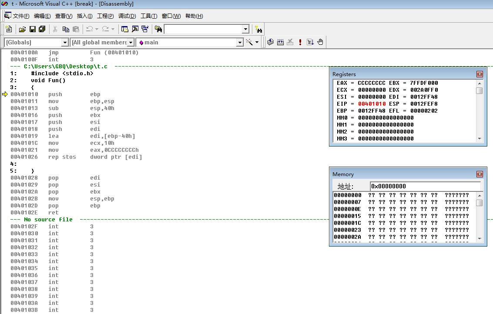
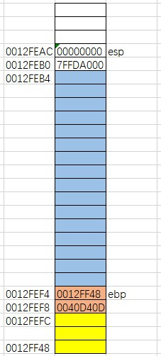
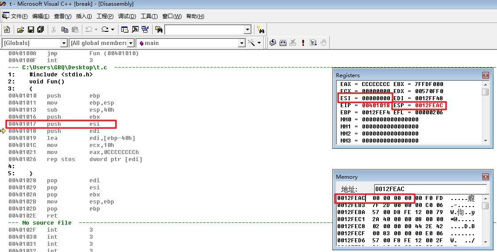
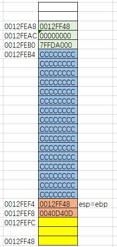

原文连接:https://www.cnblogs.com/Timesi/p/11644854.html
实验环境：WIN7虚拟机
软件：VC6
首先在VC6里面写一个空函数Fun（）；
F7编译运行一下，没有出错，接着在函数处使用F9下断点，使程序运行到Fun函数时停下。
接着F5开始运行这个程序
程序停在了Fun函数处，反汇编进去进行逆向分析
可以看到程序停在Fun函数的入口处，这里的call就是Fun函数的入口，F11跟进去进行分析。
原始堆栈图是这样的。
0040D408 call @ILT+5(_Fun) (0040100a)
F11，跟进这个call进行分析，进入函数之后编译器会将跳出函数之后下一个要执行的地址压入堆栈，即将0040D40D压入堆栈，同时esp-4，esp变成0012FEF8，这时的堆栈是这样的：
跟进来之后是一个jmp，F11直接跳转。
现在进到函数里面了

00401010 push ebp
首先将ebp压栈，就是将[ebp]压入堆栈，即将0012FF48压入堆栈，然后esp的位置向上提升一个变为0012FEF4。
查看检查寄存器进行验证：
00401011 mov ebp,esp
将esp的值赋给ebp，也就是将0012FEF4赋给ebp，这时的堆栈图是这样的
查看寄存器验证，这里可以看到esp和ebp的值相等，说明上面那个堆栈图没有问题
00401013 sub esp,40h
将esp减去40h，也就是将esp的位置提升到0012FEB4位置，这一步的作用是提升堆栈，这时的堆栈图是这样的
查看寄存器进行验证，看到esp的值为0012FEB4
00401016 push ebx
接着将ebx压栈，查看栈顶可以看到ebx被压入堆栈，同时esp的位置向上提升。
此时的堆栈是这样的：
00401017 push esi
将esi的值压入堆栈，此时的堆栈是这样的

查看寄存器进行验证：

00401018 push edi
接着将edi的值压入堆栈，此时的堆栈是这样的
查看寄存器验证：

00401019 lea edi,[ebp-40h]
将[ebp-40h]的地址存入edi中，也就是将0012FEB4存入edi。
查看寄存器验证，可以看到0012FEB4被存入edi中
0040101C mov ecx,10h
将10h存入ecx中，也就是将00000010存入ecx，查看寄存器验证：
00401021 mov eax,0CCCCCCCCh
将CCCCCCCC存入eax中，查看寄存器验证：
00401026 rep stos dword ptr [edi]
将eax的中的值存储到[edi]对应地址的内存中，并重复ecx次，也就是将CCCCCCCC存入地址0012FEB4对应的内存中，并重复10h次，rep每执行一次，[edi]会相应的加4（向下填充数值），ecx会相应的减4（减少执行次数）。
此时的堆栈是这样的：
查看寄存器验证一下，发现从0012FEF4到0012FEB4全部被填充为CCCCCCCC。
00401028 pop edi
将edi出栈，也就是将esp当前对应的值0012FF48赋给edi，同时esp加4变成0012FEAC，此时的堆栈
查看寄存器验证：
00401029 pop esi
将esi出栈，也就是将esp当前对应的值00000000赋给edi，同时esp加4变成0012FEB0，此时的堆栈
查看寄存器验证：
0040102A pop ebx
将ebx出栈，也就是将esp当前对应的值7FFDD000赋给ebx，同时esp加4变成0012FEB4，此时的堆栈
查看寄存器验证一下：
0040102B mov esp,ebp
将ebp的值赋给esp，这里的作用相当于降低堆栈，此时的堆栈是这样的

查看寄存器进行验证，esp的值和ebp的值相等
0040102D pop ebp
将ebp出栈，也就是将esp当前对应的值0012FF48赋给ebx，这时ebx又回到了一开始所在的位置，同时esp加4变成0012FEF8，此时的堆栈是这样的
查看寄存器验证一下
0040102E C3 ret
相当于pop eip，即将当前esp对应的值放入eip中，也就是将0040D40D放入eip中，同时ESP+4，esp变为0012FEFC，此时的堆栈是这样的
查看寄存器验证一下，至此堆栈恢复平衡，Fun函数执行完毕